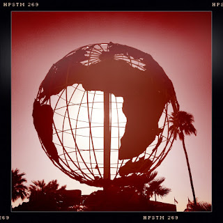

Recovered weblog entry
Leisure World

Not much to say. It's a gigantic iron globe outside of a planned retirement community. Interestingly, there's a river of water that cascades down from this globe. For some reason, the property management felt compelled to put blue dye in the water. Lots of blue dye. Very frothy. Lens: Kaimal Mark II
Film: Pistil